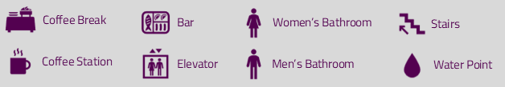

Learning objectives
- Be able to share reproducible code for more scientific and transparent transport research
- To be confident reproducing your own work and that of others
- To become skilled at using Git and GitHub to manage versions of your code and collaborate with others
- To be able to write reproducible content that can be exported to a variety of formats with the Quarto system for scientific publishing
- To understand how Quarto extensions can be used as a basis for creating publication-ready papers
- To be aware of ‘continuous integration’ and ‘GitHub Actions’ and how they can be used to ensure reproducibility, share your work, and save time
- Understanding of best practices around code sharing and collaboration for reproducible research in transport planning
Schedule Day 1 (8 Sept.)
| 9:30 |
Introduction |
|
Development environments, system commands, and version control |
|
Sharing code and data |
| 12:30 |
Lunch |
| 13:30 |
Reproducible papers and documentation with Quarto |
|
Cross-references and citations with Quarto |
Schedule Day 2 (9 Sept.)
| 09:30 |
Drafting a reproducible paper |
|
Generating reproducible publication-quality visualisations |
| 12:30 |
Lunch |
| 13:30 |
Editing other people’s work |
|
Working on papers |
|
Presentations and wrap-up |


For the full building plan, check the venue page.